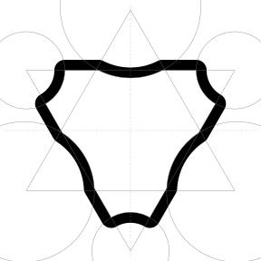

Method
How each of the 48 objects is generated, step by step. Every choice below is drawn at random by the code; nothing is modelled by hand.

The hybrids
Tracciato
The setting-out lines a plan is constructed from, drawn before any wall.
Tracciato is a set of objects made from Francesco Borromini’s way of drawing. His plans start from a simple figure, two triangles or two squares, and everything else is generated from it: the niches, the pilasters, the dome. The forms here are new; the method is his.
48 Objects. Each plan is built by code from overlapping regular figures, with apses, niches, bowed walls or star points on its sides, sometimes stretched into an oval. The figure is then carried upward into walls, entablature and a Sant’Ivo or San Carlo type dome.
24 Hybrids. An early experiment: a CycleGAN trained on Roman plans and sections, never paired. Translated: the network was asked to draw a plan’s sections, but mostly echoed the plan. Clashed: a plan meets two real sections from other buildings. The 3D form is where the drawings agree.
Ongoing research. Tracciato is a work in progress, not a finished set. The objects and the hybrids are early results, published as the research continues: next come a cleaner set of real plans, a retrained network, and new ways of carrying a plan into section and form.
Ali Chaaraoui, 2026.
Close